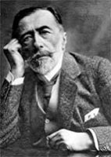

(1857 – 1924)

Polonya asıllı olmasına ve anadilinin İngilizce olmamasına rağmen İngiliz romanının en önemli adlarından biri olmayı başaran Joseph Conrad, özellikle "Karanlığın Yüreği", "Lord Jim" ve "Nostoromo" adlı romanlarıyla kendinden sonraki kuşağın romancılarını büyük oranda etkiledi ve romanları sinemaya ilk uyarlanan yazarlardan biri oldu.
Asıl adı Jozef Teodor Konrad Korzeniowski olan Polonya asıllı romancı Joseph Conrad (okunuşu: Yozıf Konrad), Polonya'nın soylu ailelerinden biri olan Nalecz ailesinin çocuğu olarak o zamanlar Polonya toprağı olan bugünkü Ukrayna'nın Berdychiv kentinde dünyaya geldi. Babası Apollo Korzeniowski, çok toprakları olmamasına rağmen İngilizce ve Fransızca bilen hatta Shakespeare ve Fransızca edebiyat yapıtlarından çeviriler yapan çok kültürlü bir aristokrattı.
1869 yılına gelindiğinde anne babasını veremden kaybeden genç Joseph İsviçre'ye, dayısı Tadeusz Bobrowski'nin yanına taşındı. Dayısının yazar üzerinde, her zaman devam edecek olumlu etkileri oldu. 1894 yılında ölen dayısı, ayrıca Joseph Conrad'a hatrı sayılır büyüklükte bir miras bıraktı. Okuluna devam etmenin yanında yazar, özlemini çektiği gemi yolculuklarına izin vermesi konusunda dayısını ikna etti ve bir Fransız gemisine miço olarak binip, 1875–78 yılları arasında Batı Hint Adaları'na üç yolculuk yaptı.
Nedeni tam olarak bilinmeyen bir biçimde silahla göğsünden yaralanan yazar, denizciliği meslek olarak seçti ve on altı yıl boyunca denizlerde ticaret yaptı. Bu arada büyük borçlara girmesine rağmen dayısı ona her zaman yardımcı oldu. 1886'ya gelindiğinde Conrad, artık birinci sınıf bir tüccardı ve Otago adlı kendi gemisine sahipti. Aynı yıl İngiliz vatandaşlığına geçti ve adını resmi olarak "Joseph Conrad"a dönüştürdü.
Conrad aslında romancı olarak tanınsa da önceleri birkaç tiyatro oyunu da yazmış, ancak istediği başarıyı yakalayamamıştı. 1896'da Jessie George ile evlenip Ashford kentine yerleşti ve ondan iki oğlu oldu. Sonraki yıllarda Fransa, İtalya, Polonya ve ABD'ye yolculuklar yapması dışında, sürekli Ashford'da yaşadı.
Yazarın ilk romanı Almayer'in Divaneliği (1895) Borneo'da ticaret yapan bir Hollandalının maceralarını anlatıyordu. Bunu ikinci romanı Adalar Sürgünü (1896) takip etti. Narcissus'un Zencisi (1897) ise Ümit Burnu açıklarında yaşanan bir fırtınayı, Afro-Amerikan bir askerin esrarerngiz maceralarını konu alıyordu.
Conrad'ın en ünlü romanlarından biri olan Lord Jim (1900) aslında önceleri bir öykü olarak düşünülmüş, sonradan romana çevrilmiş bir kitaptı ve gerçekten yaşanmış bir olayı konu almaktaydı. Yazarın bir başka çok ünlü romanı Karanlığın Yüreği, Conrad'ın Congo Nehri'nde tekne kaptanlığı yaparken yaşadığı maceralardan esinlenmiş bir romandı. Kitap 1899'da yazılmış ve 1902'de yayımlanmıştır. Conrad Congo bölgesinin keşfedilmesiyle ilgili olarak Avrupa'da çevrilen dolapları gayet iyi biliyordu ve bu romanının kahramanı Kurtz, aslında Avrupa emperyalizmini simgeliyordu. Roman bir emperyalizm eleştirisi taşısa da dili çok iğneliydi ve yerli Afrikalılar hakkında aşağılayıcı ifadelere bile yer veriyordu.
Narcissus'un Zencisi (1897) ile 1911 yılında yayımlanan Batılı Gözler Altında arasındaki dönem Joseph Conrad'ın en üretken dönemi olarak bilinmektedir. Bu dönemde hem dostu H. G. Wells hem de yazar John Galsworthy Conrad'ı destekledi. Ford Madox Ford adlı yazarla da işbirliği yapan Conrad, onunla ortak olarak üç roman yazdı: Vârisler (1901), Aşk Hikayesi (1903) ve Suçun Doğası (1924).
Romancının yaşamının son dönemleri, romatizma hastalığıyla boğuşarak geçti. 1924 yılında kendisine önerilen şövalyelik unvanını reddettiğinde kimseyi şaşırtmamıştı; çünkü daha önce de beş üniversitenin vermek istediği onursal doktorluk ünvanını geri çevirmişti. Romancı Joseph Conrad, 3 Ağustos 1924 tarihinde kalp krizinden öldü ve Canterbury'de toprağa verildi.
Seçme Romanları: Narcissus'un Zencisi (1897), Vârisler (1901) (Ford Madox Ford'la birlikte), Nostromo (1904 – Adam Yayıncılık, 1985), Gizli Ajan (1907 – İletişim Yayınları, 2011), Lord Jim (1900 – İletişim Yayınları, 2009), Karanlığın Yüreği (1902), Batılı Gözler Altında (1911 – İletişim Yayınları, 2007)